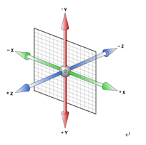
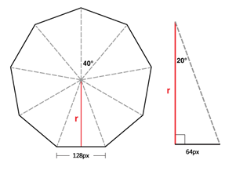

看了一篇很污的文章，深刻理解了CSS3 3D transform变换！！！就我理解改编的东西^_^
写之前，突然想起点东西。如下：
-webkit-transform定义了元素的变形，-webkit-transition定义了元素的属性变化样式，-webkit-animation与-webkit-keyframes则真正的让元素动起来（不只是变到什么状态，更定义了中间过程）-webkit-animation定义一段动画属性，比如名字，持续时间，当前状态等。-webkit-keyframes则对每一个动画定义时间轴(动画帧)，可以设置某个时间动画作用的元素是什么状态。
transform-style: preserve-3d;/*子元素将保留其 3D 位置。*/
animation-name: x_rot; /* 设置 name animations */
animation-duration: 6s;/*始终规定animation-duration属性，否则时长为 0，就不会播放动画了*/
animation-iteration-count: infinite;/*定义动画应该播放无数次*/
animation-timing-function: ease;/*从开始到结束动画以低速开始，然后加快，在结束前变慢d速度播放动画:*/
linear 动画从头到尾的速度是相同的。
ease 默认。动画以低速开始，然后加快，在结束前变慢。
ease-in 动画以低速开始。
ease-out 动画以低速结束。
ease-in-out 动画以低速开始和结束。
cubic-bezier(n,n,n,n) 在 cubic-bezier 函数中自己的值。可能的值是从 0 到 1 的数值。
(以下内容75%都是偷人家的，其实很很害怕版权问题，所以不小心到的娃娃千万不要声张，偷偷的就好，嘘！)
坐标基本图很简单,实在不懂也不管你了。
Transform有下面三种东西帮助理解三维坐标，它们是什么呢
• rotateX( angle )
• rotateY( angle )
• rotateZ( angle )
rotate旋转的意思，rotateX旋转X轴，rotateY旋转Y轴，rotateZ旋转Z轴…xy不难理解，rotateZ就像抽奖活动的那个转盘。
perspective属性：
perspective的中文意思是：透视，视角！
perspective属性的存在与否决定了你所看到的是2次元的还是3次元的，也就是是2D transform还是3D transform. 这不难理解，没有透视，不成3D。
注意：CSS3 3D transform透视点在浏览器（屏幕）前方！
（显示器中3D效果元素的透视点在显示器的上方（不是后面），近似就是我们眼睛所在方位）
假设以人的眼睛为视点，显示器分辨率为1680*1050，则眼睛距离显示器的距离大概是1.2个显示器的宽度。那么，此时显示器上元素的视角大概为1680*1.2~2000像素。
说一下rotateZ，它能帮我们理解透视的位置。其功能就是让元素在自己的眼前或近或远。比方说，我们设置元素perspective为201像素，如下： perspective: 201px;
则其子元素，设置的translateZ值越小，则子元素大小越小（因为元素远去，我们眼睛看到的就会变小）；translateZ值越大，该元素也会越来越大，当translateZ值非常接近201像素，但是不超过201像素的时候（如200像素），该元素的大小就会撑满整个屏幕（如果父辈元素没有类似overflow:hidden的限制的话），当translateZ值再变大，超过201像素的时候，该元素看不见了。
perspective属性有两种书写形式，一种用在舞台元素上（动画元素们的共同父辈元素）；第二种就是用在当前动画元素上，与transform的其他属性写在一起。 如下代码示例：
1： .stage { perspective: 600px; }
2： #stage .box { transform: perspective(600px) rotateY(45deg); }
当舞台上有比较多的元素时，它们两的区别就出来了，第一种舞台整个作为透视元素，因此，显然，我们看到的每个子元素的形体都是不一样的；而第二种，每个元素都有一个自己的视点，因此，显然，因为rotateY的角度是一样的，因此，看上去的效果也就一模一样。
perspective-origin这个属性就表示你眼睛看显示器的位置，默认就是所看舞台或元素的中心。其他：perspective-origin：25% 75%；
transform-style: preserve-3d
transform-style属性也是3D效果中经常使用的，其两个参数，flat|preserve-3d. 前者flat为默认值，表示平面的（子元素将不保留其 3D 位置。）；后者preserve-3d表示3D透视。即使被转换的子元素将保留其 3D 位置。
preserve-3d符合我们真实世界的思维认识。比方说，你让妹子右转了45度，此时妹子脑袋左转45度想你吐舌卖萌，妹子的脸蛋应该和你是面对面平行的。
应用transform-style: preserve-3d声明的元素确实是这样表现的，但是，如果使用默认的flat值，其效果表现——恕我想象力有限——想不通：妹子的脸还是左转45度的，同时脑袋似乎移到了身体以外的地方(可怕)！
因此，基本上，我们想要根据现实经验实现一些3D效果的时候，transform-style: preserve-3d是少不了的。一般而言，该声明应用在3D变换的兄弟元素们的父元素上，也就是舞台元素。
backface-visibility
在CSS3的3D世界中，默认情况下，我们是可以看到背后的元素。要使后面的元素不可见，我们可以这样设置：
backface-visibility:hidden;
相册旋转效果：（具体demo的代码就不放在这里了。）
梳理下结构：
HTML代码：
舞台
容器
图片
图片
图片
...
对于舞台，很简单，加个视距，比方说800像素：
perspective: 800px;
对于容器，很简单，加个3D视图声明，如下：
transform-style: preserve-3d;
然后就是相片了。
为了不至于产生类似DNA的螺旋状效果，我们让所有图片position:absolute，公用同一个中心点。
显然，图片旋转木马是类似钢管舞旋转的运动，因此，我们关心的是rotateY的大小。
因为要正好绕成一个圈，因此，图片rotateY值正好0~360等分，于是，如果有9张图片，则每个图片的旋转角度累加40(360 / 9 = 40)度即可。因此有：
img:nth-child(1) { transform: rotateY( 0deg ); }
img:nth-child(2) { transform: rotateY( 40deg ); }
img:nth-child(3) { transform: rotateY( 80deg ); }
img:nth-child(4) { transform: rotateY( 120deg ); }
img:nth-child(5) { transform: rotateY( 160deg ); }
img:nth-child(6) { transform: rotateY( 200deg ); }
img:nth-child(7) { transform: rotateY( 240deg ); }
img:nth-child(8) { transform: rotateY( 280deg ); }
img:nth-child(9) { transform: rotateY( 320deg ); }
但是这样还不行，这9张相片的方位虽然不一样，但是都在同一个点上，会挤作一团，我们接下来要做的就是拉开空间。
要拉开它们的空间，只需要让它们每一个都往前走几步就好啦，怎么走呢，我们还记得translateZ吗，当translateZ为正值的时候，元素会向其面对的方向走去；如果元素无旋转，就会朝显示器走来。~~但是还是有一个问题哦，我们具体要走几步呢？嘿嘿，让我们来看看计算公式呗^_^
如果我设置每张相片的宽度是128像素，因此，有如下理想方位效果图

上图中红色标注的r就是的demo中图片要translateZ的理想值（该值可以让所有图片无缝围成一个圆）
r的计算很简单：
r = 64 / Math.tan(20 / 180 * Math.PI) ≈ 175.8
demo页面为了好看，图片之间留了点间距，使用的translateZ的值为175.8 + 20 = 195.8.
即：
style=”-webkit-transform:rotate(0deg) translateZ(195.8px);
…
…
..
.”
最后的最后，要让图片旋转起来，只要让容器每次旋转40度就可以了。
具体的JavaScript操作代码就不展示了，不想弄了，demo源码链接(3d环形旋转照片墙)看心情上传，也可以网上找资源^_^
2016.6.27
22:21pm
Yuyi